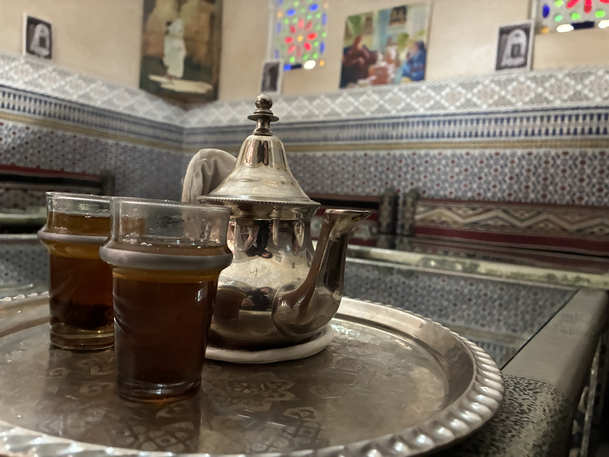
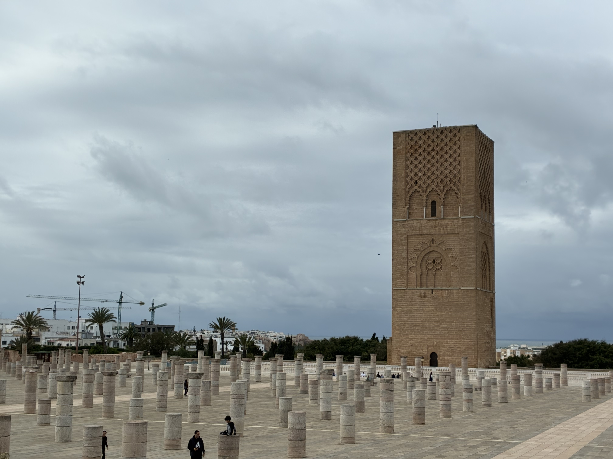
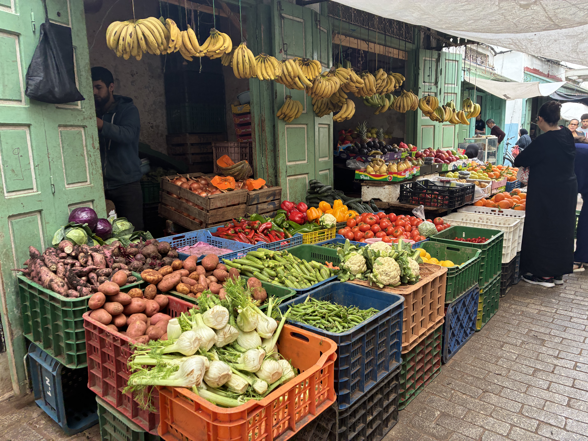
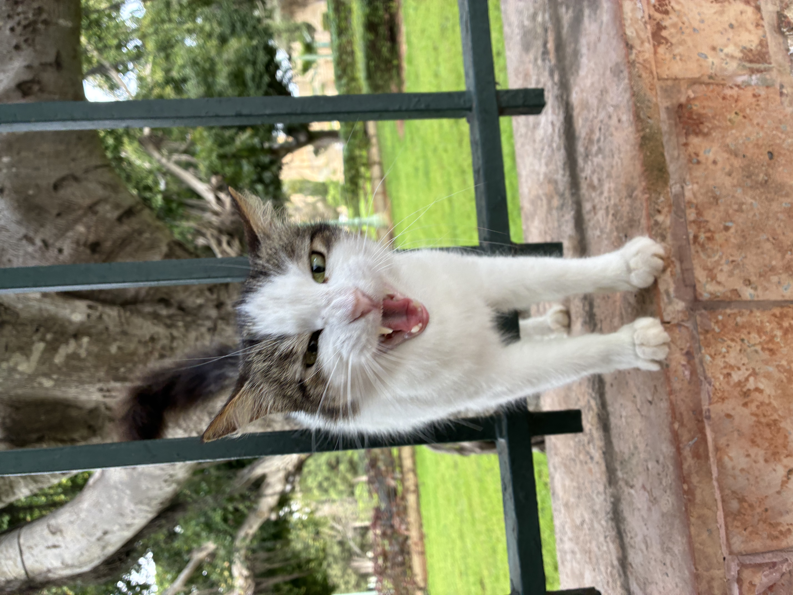
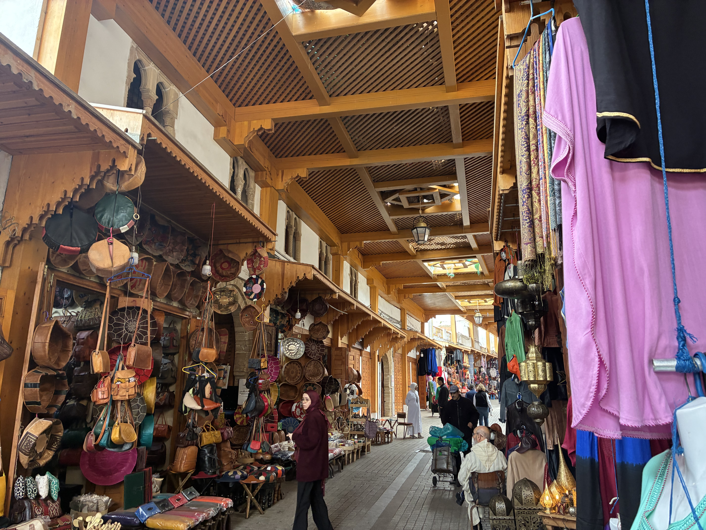

Our 50th country had to be special, and Morocco absolutely delivered. We spent just one night in Rabat, the capital of Morocco, and honestly, we're already dying to go back and explore more of the country.
Hitting 50 countries felt like a proper milestone for us. We've been traveling together for four years now, ticking off destinations from Antarctica to Armenia, and Morocco was the perfect place to mark this achievement. Plus, the fact that we managed to do it on an absolute shoestring budget made it even better.
Getting There: The Bargain Flights
We stayed at our usual Stansted Premier Inn the night before our early flight, which cost £51 total (£25.50 each). It's nothing fancy, but it's clean, comfortable, and means we don't have to stress about getting to the airport at ridiculous hours in the morning.
The flights were booked with Ryanair, and here's where it gets good. My work (Flight Centre) gave me a flight voucher for our birthday, which meant our return flights to Rabat cost just £9 per person total. Thank you, Flight Centre! Without the voucher, flights to Morocco are still pretty affordable from the UK, usually around £40-80 return if you book in advance.
We left bright and early at 7:35am and landed in Rabat at 10:30am. The flight time is only about 2.5-3 hours, which is incredible when you think about it. Breakfast in London, lunch in Morocco.
The airport (Rabat-Salé Airport) was really lovely. Modern, clean, and not overwhelming like some major airports can be. Immigration was straightforward, and within 30 minutes of landing, we were out and looking for transport into the city.
Getting to the City Center
We took the airport bus into Rabat city center, which cost 25 MAD per person (about £2). The bus was clean, air-conditioned, and dropped us right near the central train station. The journey took about 30-40 minutes depending on traffic.
From the train station, we had a lovely walk to our riad. Rabat felt immediately different from what we expected. It's quieter and more relaxed than Marrakech (from what we've heard), with wide boulevards, palm trees, and a really pleasant atmosphere.
Where We Stayed: Riad Sidi Fatah
We stayed at Riad Sidi Fatah for one night and paid £42 each (£84 total). A riad is a traditional Moroccan house with an interior courtyard, and staying in one is absolutely part of the Moroccan experience.
Our riad was beautiful. Traditional tiled floors, carved wooden details, and a peaceful courtyard in the center. Our room was simple but comfortable, and the staff were lovely and helpful with recommendations for what to see.
The best part? A traditional Moroccan breakfast was included. We're talking fresh bread, jams, honey, Moroccan pancakes (msemen), olives, cheese, and mint tea. It was delicious and the perfect way to start our day exploring.

One Night in Rabat: Is It Enough?
Honestly, when we were researching Rabat, a lot of people said it's mostly a day trip destination. Many travelers stay in Casablanca and take the train to Rabat for the day, see the main sights, and head back.
We decided to stay one night, and that felt like the perfect amount of time. We saw all the main attractions, wandered through the medina, did some souvenir shopping, and got a real feel for the city without rushing. If you're short on time, a day trip would work, but staying overnight meant we could enjoy a slower pace and experience the riad properly.
What We Saw in Rabat
Hassan Tower and Mausoleum of Mohammed V
This was probably the highlight of our visit. Hassan Tower is the minaret of an incomplete mosque that was started in 1195. The mosque was meant to be the largest in the world, but construction stopped when the sultan died, and it was never finished.
What remains is this stunning 44-meter tall tower (originally meant to be 86 meters) and hundreds of columns marking where the mosque would have been. It's really impressive, and you can walk among the columns and get great photos.
Right next to the tower is the Mausoleum of Mohammed V, which is the burial place of the Moroccan king and his two sons. The building is absolutely beautiful, with intricate tile work, carved stone, and guards in traditional uniforms standing watch. You can view the tombs from a balcony overlooking the interior, and it's genuinely stunning.
Entry to both sites is free, which is amazing considering how significant they are.

The Medina
Rabat's medina (old town) is way more relaxed than the famous medinas in Marrakech or Fez. It's less touristy, less intense, and honestly, that made it more enjoyable for us.
We spent hours just wandering through the narrow streets, looking at shops selling everything from spices to leather goods to traditional clothing. The shopkeepers were friendly but not pushy, which was refreshing.
Kasbah of the Udayas
The Kasbah sits on a hill overlooking the ocean and the river. It's this beautiful blue and white painted neighborhood with narrow, winding streets. Honestly, it's one of the most photogenic places we've been.
Walking through the Kasbah felt like stepping into a postcard. The blue and white buildings, the flowers, the views of the Atlantic Ocean, it's all gorgeous. There's also a lovely Andalusian garden inside the Kasbah where you can sit and relax.
At the top of the Kasbah, there's a viewpoint where you can look out over the ocean and see the neighboring city of Salé across the river. We spent a good amount of time up there just taking it all in.
The Markets
We also explored the food markets in the medina, and I'll be honest, this is where things got a bit intense. The markets sell fresh produce, spices, meats, and live animals. If you're not comfortable seeing animals in cages or the less sanitized side of food markets, you might want to skip this part or just walk through quickly.
For us, it was an interesting cultural experience, but it's definitely different from what you'd see in UK markets. The hygiene standards are just different here, which is something to be aware of.
We didn't try much street food during our visit, partly because we were there during Ramadan (so a lot of food stalls were closed during the day), and partly because I'd had some dodgy chicken the day before (my own fault for ordering chicken, lesson learned). Rabat is known for its street food and fresh seafood, so if you're there outside of Ramadan and have a strong stomach, definitely give it a try.

The Cats of Rabat
Can we talk about the cats for a second? Rabat has so many street cats, and they were everywhere. Lounging in the medina, hanging around the Kasbah, sleeping in sunny spots in the markets.
Harry and I have never petted so many cats in all our travels. Most of them were friendly and used to people. Some were a bit scrappy, but they all deserved some love. If you're going to pet street cats (which, let's be honest, we can't resist), just make sure you carry hand sanitizer for a quick clean-up afterwards.

Souvenir Shopping: What We Bought
As usual, we spent a decent chunk of our budget on souvenirs. Morocco is amazing for shopping, and we couldn't resist. We bought:
- A gorgeous traditional Moroccan rug (we haggled for ages and got a good price)
- A beautiful decorative mirror with traditional tile work around the frame
- An absolutely stunning ashtray (we don't even smoke, but it was too beautiful to leave behind)
Haggling is expected in Moroccan markets, so don't be afraid to negotiate. Start at about 50% of the asking price and work your way up. It's all part of the experience, and shopkeepers actually enjoy the back-and-forth.

Traveling During Ramadan
We visited Rabat during Ramadan, which meant the city had a different rhythm than usual. During the day, most Muslims are fasting, so a lot of restaurants and food stalls are closed until sunset.
It's absolutely fine to travel during Ramadan as a non-Muslim, but be respectful. Don't eat or drink openly on the streets during daylight hours. We kept snacks and water in our bags and would duck into our riad or a quiet spot if we needed to eat.
The atmosphere at sunset (iftar, when the fast is broken) is really special. The streets come alive, families gather for meals, and there's this beautiful sense of community.
Rabat Budget Breakdown
Here's what our trip to Rabat actually cost:
- Accommodation (night before flight): Premier Inn Stansted: £51 total (£25.50 each)
- Flights: Ryanair return flights: £9 per person (thanks to work voucher)
- Accommodation in Rabat: Riad Sidi Fatah: £84 total (£42 each) including breakfast
- Transport: Airport bus to city center: 25 MAD per person (about £2 each)
- Attractions: Hassan Tower and Mausoleum (Free), Kasbah of the Udayas (Free), Medina (Free to wander)
- Souvenirs: Rug, mirror, and ashtray: approximately £60-80 total (after haggling)
Total cost for the trip (excluding souvenirs): About £80-90 each for flights, accommodation, and transport. Morocco is incredibly affordable, especially compared to most European destinations. Even without the flight voucher, this would have been a budget-friendly trip.
Practical Tips for Visiting Rabat
- Currency: Moroccan Dirham (MAD). The exchange rate is roughly 12-13 MAD to £1. You can exchange money at the airport or withdraw from ATMs in the city.
- Language: Arabic and French are the main languages. English is spoken in tourist areas.
- Dress Code: Dress modestly out of respect. Hannah wore loose trousers or long skirts and tops that covered her shoulders. Harry wore long trousers and t-shirts.
- Safety: We felt very safe in Rabat. Use common sense, but we never felt uncomfortable or threatened.
- Best Time to Visit: Spring (March-May) and fall (September-November) are ideal.
- Getting Around: Rabat is walkable. Taxis are cheap if you need them (make sure they use the meter or agree on a price first).
Why Rabat Over Other Moroccan Cities?
A lot of people skip Rabat in favor of Marrakech, Fez, or Chefchaouen. And while those cities are amazing (and on our list for next time), Rabat has a charm of its own.
It's less touristy, which means it's more authentic and relaxed. You can explore the medina without constant hassle from sellers. You can enjoy the sights without fighting through crowds. And you get a real sense of everyday Moroccan life rather than the tourist-focused atmosphere of Marrakech. Plus, as the capital, Rabat has this interesting mix of historical sites and modern government buildings.
Final Thoughts
Morocco as our 50th country felt perfect. It's so close to the UK (less than 3 hours flying), it's affordable, it's culturally rich, and it's completely different from anything else in Europe.
One night in Rabat was enough to see the main sights and get a taste of Moroccan culture, but it's definitely left us wanting more. Next time, we want to explore Chefchaouen (the blue city), spend time in Marrakech, maybe do a desert tour, and eat all the tagine and couscous we can handle.
If you're looking for an affordable, interesting, and relatively easy destination that feels genuinely foreign, Morocco is perfect. And Rabat, as the capital, is a great place to start.